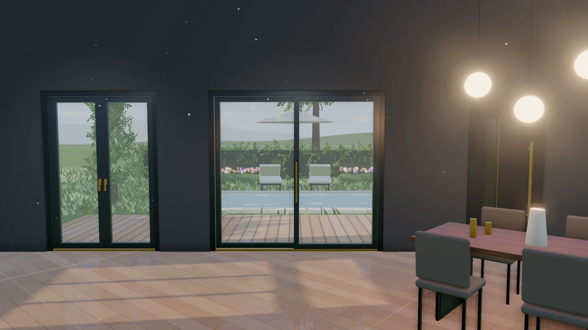
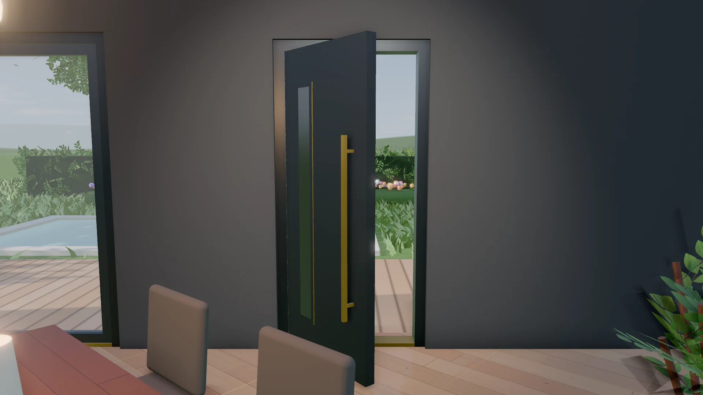
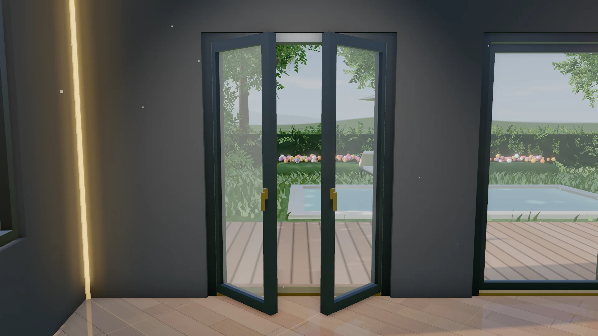
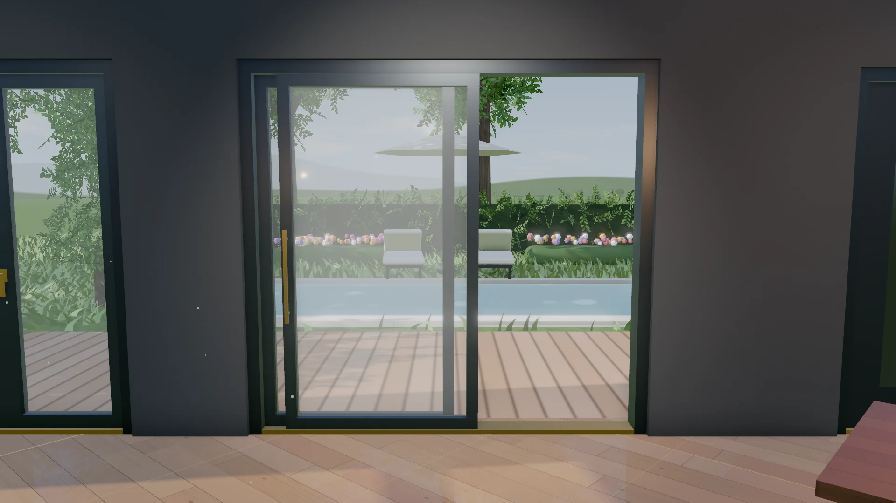

- Pagrindinis
- Durys
Durys
Lauko ir terasos durys su montavimu
Įėjimo durys, dvivėrės stiklinės ar stumdomos terasos durys: padėsime išsirinkti, nemokamai išmatuosime ir sumontuosime visoje Lietuvoje.

Tipai
Kokias duris montuojame
-

Lauko durys
Įėjimo durys į namą. Parenkame pagal šilumos, saugumo ir išvaizdos poreikius.
Gauti pasiūlymą → -

Dvivėrės stiklinės durys
Dvi varčios atsidaro visu pločiu: platus praėjimas ir daug dienos šviesos.
Gauti pasiūlymą → -

Terasos stumdomos durys
Didelės stiklinės varčios slenka į šoną ir atveria išėjimą į terasą ar sodą, neužimdamos vietos patalpoje.
Gauti pasiūlymą →
Pasirinkimai
Ką galite pasirinkti
Nesate tikri? Užklausoje pažymėkite „Patarkite“ – sprendimą pasiūlysime pagal Jūsų angą ir biudžetą.
Eiga
Nuo užklausos iki sumontuotų durų
Konsultacija
Aptariame poreikius ir atsiunčiame preliminarų pasiūlymą per 1 darbo dieną.
Matavimas
Nemokamai atvykstame, išmatuojame angą ir aptariame durų modelį.
Gamyba
Durys gaminamos pagal patikslintus matmenis ir pasirinkimus.
Montavimas
Sumontuojame, patikriname spynas ir sandariname slenkstį. Kaip montuojame →
DUK
Dažniausi klausimai
Ar matavimas mokamas?
Ne. Atvykstame, išmatuojame angą ir aptariame durų modelį nemokamai. Preliminarų pasiūlymą atsiunčiame per 1 darbo dieną.
Kokias duris rinktis išėjimui į terasą?
Jei vietos patalpoje mažai, rinkitės stumdomas terasos duris – atsidarydamos jos neužima vietos. Jei norite plataus praėjimo, tinka dvivėrės stiklinės durys. Specialistas patars matavimo metu.
Ar galiu užsisakyti duris be montavimo?
Taip. Užklausos formoje pasirinkite „Tik gaminiai“.
Kur dirbate?
Duris matuojame ir montuojame visoje Lietuvoje.